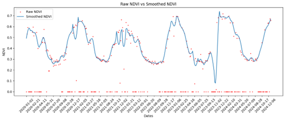
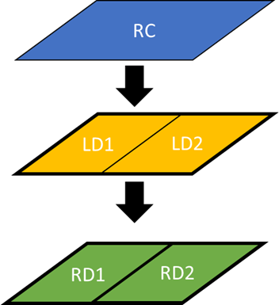

FEGA — Tool and results
FEGA includes an application for detecting and visualizing indicators over parcels and time series. The page shows application screenshots, filtered series and result diagrams.


Documentation:
FEGA includes an application for detecting and visualizing indicators over parcels and time series. The page shows application screenshots, filtered series and result diagrams.


Documentation: